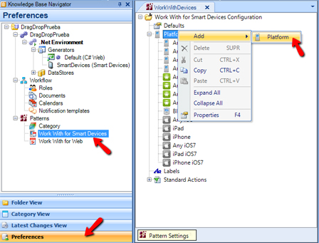
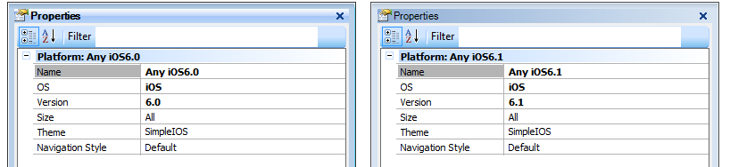
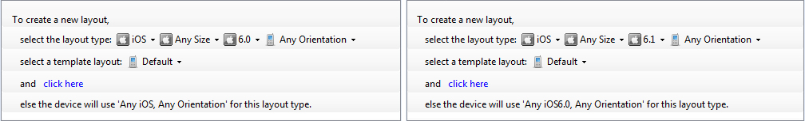
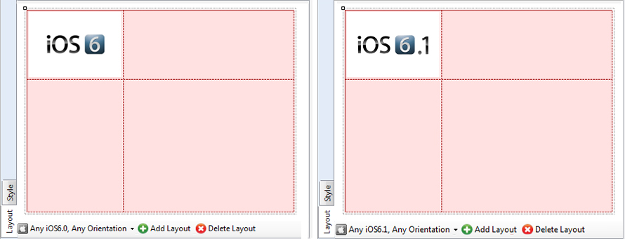
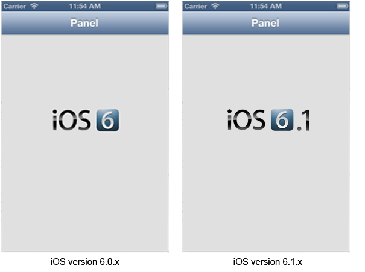

There are many Smart Devices that support different operating systems, screen sizes, aspect ratios, resolutions, and densities, among other things. These features often change the type and volume of data to be displayed on them; for example, you may want to change an image or a font depending on the target operating system. In order to simplify the way we model all these features, GeneXus has introduced the 'Platform' concept in Smart Device Settings. Each SD Panel or component (List, Detail, Section) in a WWSD instance can have multiple layouts and they are associated with a certain platform. Create an SD PlatformTo create a new Platform select the Preferences tab > Patterns node > Work With for Smart Devices subnode (you have to double-click on it to open its configuration tree). Once there, right-click on the Platforms node and select: Add > Platform.  General Platform properties
ExampleConsider that two new platforms for iOS versions 6.0.x and 6.1.x are created.  In aPanel for Smart Devices object two layouts are generated(one for each platform) and an image is inserted in each one.   When runing the application on the device, the layout corresponding to the OS version will be displayed.  |
| Backlinks | |||
| Biometrics Reuse Duration property | Getting Started with tvOS | ||
| Getting Started with watchOS | Platform Overrides property | Category:Theme for Smart Devices object | Theme property (for SD Platforms) |